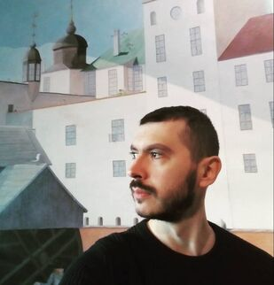

Slobodan Perović
Project leader
Professor Slobodan Perović
Department of Philosophy, University of Belgrade
www.slobodanperovic.weebly.com - www.f.bg.ac.rs/en2/philosophy/dep_staff
Monika Milosavljević
Research associate
Dr. Monika Milosavljević
Assistant Professor, Department of Archaeology,
University of Belgrade
Janko Nešić

Postdoctoral researcher
Dr. Janko Nešić
Institute of Philosophy,
Department of Philosophy,
University of Belgrade